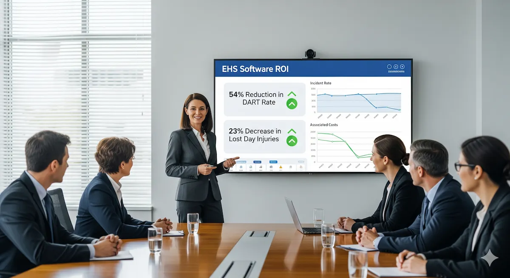

Measuring Success: Real-World ROI of EHS Software
Jun 7, 2025
So far in our series, we've covered: Part 1: EHS Software: More than Just a Technological Fix, Part 2: Human Element: Culture & Leadership in EHS Software Success, and Part 3: Strategic Implementation: A Phased Approach to EHS Software Deployment. Having laid the groundwork for understanding EHS software strategy, the importance of the human element, and the phased approach to deployment, it's now time to talk about results. In Part 4, we focus on the tangible impact and how to demonstrate the return on investment (ROI) from your EHS software.
The true value of EHS software is seen not in its list of features but in its tangible impact on an organization's safety performance, operational efficiency, and compliance. Examining real-world case studies and understanding common mistakes offers valuable lessons for achieving these results and showing a clear return on investment.
Learning from Success: Showcasing Case Studies
Several organizations have successfully leveraged EHS software to make significant improvements. These examples highlight the transformative potential when technology is coupled with strategic implementation and organizational commitment:
- George's Inc. (Intelex): This food processing company struggled with data scattered across spreadsheets and PDFs, making data retrieval time-consuming and leading to a reactive safety approach based on past incidents. Their paper-based system also didn't meet ISO 45001 requirements.1 By implementing Intelex EHS software, focusing on modules like Incident Management, Document Control, Observations, Inspections Management, and Permits Management, and utilizing the platform's configurability, George's Inc. achieved a 54% reduction in their DART (Days Away, Restricted, or Transferred) rate.1 These outcomes show substantial safety improvements and increased operational efficiency.
- Dyno Nobel (VelocityEHS): As a large commercial explosives manufacturer operating in a high-risk environment, Dyno Nobel struggled with inconsistent and unclear risk management processes. Their legacy methods for risk analysis and verifying critical controls (CCVs) were cumbersome and fragmented, making it difficult to gather and analyze data effectively.2 The implementation of VelocityEHS's Risk Management solution, featuring a bowtie framework, allowed Dyno Nobel to standardize risk definitions and streamline CCV management. Their Employee Lost Day Injury Rate fell by 23% (from 75 to 58 year-on-year), the Total Recordable Injury Frequency Rate (TRIFR) decreased by 53% (from 0.9 to 0.42 year-on-year), and the Significant Event Frequency Rate was reduced by 39% over a two-year period. Beyond these safety improvements, Dyno Nobel also reported gains in operational efficiency through automated CCV collection and a more proactive safety culture.2
- Yara International (Enablon): This global chemical company used an inefficient paper-based permit-to-work (PTW) system. Recognizing the need for an update, Yara began a digital transformation, implementing Enablon's digital PTW software solution across its global sites.3 The goals were to improve worker safety and the efficiency of maintenance processes. The results included a more standardized approach to permits, hazard identification, and control implementation; improved communication and cooperation between Maintenance and Operations teams, leading to safer and more efficient maintenance work; and a much quicker, more automated permit issuance, approval, and closure process, which is also less prone to human error. The Enablon system brought tangible safety improvements, time savings, and overall efficiencies to Yara's operations.3 While specific metrics for Yara are in the full case study, related Enablon Control of Work solutions have shown impactful results elsewhere, such as a major pharmaceutical manufacturer reducing control of work-related incidents by 94% and an oil and gas major saving $30 million per year across over 100 sites.4
These case studies often highlight improvements in lagging indicators, such as reduced incident rates. However, the underlying success is frequently driven by significant improvements in managing leading indicators, like increased safety observations, more thorough near-miss reporting, and the timely completion of corrective and preventive actions, all made possible by the capabilities of the EHS software.5 When presenting the ROI of EHS software, it is crucial to connect the points: the software's ability to improve the capture and management of leading indicators is what ultimately reduces negative outcomes, providing a more complete picture of proactive and effective EHS management.
Quantifying the Value: Demonstrating Return on Investment (ROI)
The ROI of EHS software goes beyond just ensuring assurance. Tangible returns include direct cost savings from reduced workplace incidents (medical expenses, compensation, lost workdays), lower insurance premiums, and fewer regulatory fines and penalties. Additionally, productivity gains come from streamlined EHS processes, reduced administrative workload on EHS staff and operational teams, and better resource allocation.5 Furthermore, a strong EHS program, supported by effective software, can lead to improved employee morale, higher engagement, and better retention rates, as well as an enhanced corporate reputation among customers, investors, and the community.5
The argument that "the budget won't allow it" often overlooks the significant costs of not implementing effective EHS management systems, including the direct and indirect costs of incidents and non-compliance.6 Modern EHS software solutions are also becoming more accessible to a wider range of organizations.6 Some EHS software providers design their tools to help organizations show positive ROI by tracking key metrics related to operational performance and long-term cost savings.7 The measurable results cited in case studies, such as the DART rate reduction at George's Inc., serve as concrete inputs for calculating this ROI.
It is important to take a broad view of ROI that includes not only easily quantifiable financial metrics but also qualitative benefits. Enhanced safety culture, improved employee morale, and a stronger brand reputation are harder to assign a direct dollar value to, yet they are critically important for long-term business sustainability and success.5
Common Mistakes to Avoid & Lessons Learned
Understanding common mistakes is as important as identifying best practices. The "lessons learned" from challenged or failed EHS software implementations consistently point back to the main arguments of this article: an underestimation of the importance of change management, insufficient user engagement, and a lack of sustained leadership. These patterns suggest that failures are rarely random but typically stem from neglecting fundamental principles of implementing socio-technical systems. The following table outlines some of the most frequent mistakes and proactive strategies to mitigate them:
Table 1: Common EHS Software Implementation Mistakes & Proactive Mitigation Strategies
| Common Mistake | Typical Impact on Project Success | Proactive Mitigation Strategy |
|---|---|---|
| Focusing Too Much on Technology | Neglect of critical people and process elements, leading to a system that is not well-adopted or aligned with business needs. Low ROI. | Adopt a holistic approach from the outset, equally prioritizing technology, people (culture, change management), and process alignment. |
| Lack of Clear Leadership Commitment | Project lacks direction, resources, and authority; employee buy-in is low; initiative falters or fails to achieve strategic goals. | Secure active, visible, and sustained sponsorship from the C-suite. Leaders must champion the vision and allocate necessary resources. |
| Poorly Defined Requirements / Lack of Alignment | Software doesn't meet actual business needs or solve the right problems; wasted investment and user frustration. | Conduct thorough needs analysis involving all stakeholders. Define clear, prioritized objectives (must-haves, should-haves, nice-to-haves). |
| Not Involving Users / System Designed for EHS Only | Low user adoption, resistance to change, system perceived as irrelevant or burdensome by frontline staff. | Engage end-users early and throughout the process (selection, design, pilot). Ensure the system provides value to all user groups, not just EHS managers. |
| Poor Data Integrity ("Garbage In, Garbage Out") | Inaccurate reporting, flawed analytics, poor decision-making, erosion of trust in the system. | Develop and execute a data cleaning and migration plan. Establish data governance standards. Validate data before and after migration. |
| Not Using Vendor Configurations / Too Many Customizations | Automating inefficient processes; creating a complex, costly, and difficult-to-maintain system; diverging from vendor best practices. | Prioritize vendor-suggested configurations and industry best practices. Limit customizations to essential, unique needs. Re-engineer processes to fit software. |
| No Buy-in Strategy / Poor Change Management | High resistance to change, low user adoption, underutilization of software features, failure to achieve desired cultural impact. | Implement a formal change management plan. Communicate consistently, address concerns, build a coalition of support. |
| Inadequate or Rushed Training | Users lack proficiency and confidence, leading to errors, frustration, and avoidance of the system. | Provide comprehensive, role-based, and ongoing training using various formats. Offer continuous learning opportunities and accessible support. |
| Lack of Mobility / Offline Access | Field workers cannot easily report data or access information, leading to incomplete data and reduced system effectiveness. | Prioritize solutions with robust, user-friendly mobile capabilities, including offline access for remote or disconnected environments. |
| Insufficient IT Support (Vendor or Internal) | Technical issues, bugs, and glitches are not resolved promptly, leading to user frustration and system downtime. | Ensure clear SLAs with the vendor for support. Adequately resource internal IT support if needed. Choose vendors with strong, responsive support teams. |
| Treating Software as "Just Another System" | Failure to integrate the EHS software into core EHS processes and daily workflows, making it an isolated tool rather than an integral system. | Position the EHS software as a central component of the EHS management system. Embed its use into standard operating procedures and job responsibilities. |
| Not Acting on Lessons Learned / Outputs | Repeating past mistakes; documented lessons gather dust; failure to translate insights into actionable improvements. | Establish a process for post-implementation reviews and systematically act on findings. Assign responsibility for implementing improvements. |
By understanding these potential mistakes and proactively implementing mitigation strategies, organizations can significantly increase their chances of a successful EHS software implementation that delivers value. Demonstrating ROI isn’t just about justifying expenditure; it’s about showcasing the true value EHS software brings in creating a safer, more efficient, and compliance organization.
References
- How George's Aligned with ISO 45001 Using Intelex, https://www.intelex.com/clients/case-studies/georges-inc/
- Dyno Nobel Enhances Risk Management With Comprehensive Software | VelocityEHS, https://www.ehs.com/wp-content/uploads/2022/07/velocityehs-dyno-nobel-case-study.pdf
- Yara improves efficiency and safety with digital permit-to-work | Enablon - Wolters Kluwer, https://www.wolterskluwer.com/en/expert-insights/yara-improves-efficiency-and-safety-with-digital-permit-to-work
- Enablon Control of Work – Value and ROI Explained - YouTube, https://m.youtube.com/watch?v=sYyw7wvUu9U&pp=ygUOI2NvbnRyb2xvZndvcms%3D
- Top Five Reasons to Invest in EHS Software, https://www.ehs.com/2025/03/top-five-reasons-to-invest-in-ehs-software/
- Top 3 Objections to EHS Software and What They Get Wrong - Safeopedia, https://www.safeopedia.com/top-3-objections-to-ehs-software-and-what-they-get-wrong/2/4012
- Industrial Ergonomics - Cority, https://www.cority.com/health-cloud/industrial-ergonomics/